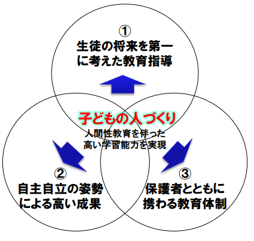

塾学習に関するコラム
個別指導塾アップルズ「大阪高槻校」指導コンセプト
①生徒の将来を第一に考えた教育指導
１）有名校合格者数の実績という塾側の都合ではなく、「生徒の１０年後・２０年後の将来のため」という視点に立った教育指導を行う。そのために、同時に目の前の学習の成果についても徹底的に追及する。
２）テストや志望校だけでなく、部活や通常の生活においても、つねに高いハードルに挑戦し続ける意欲を育む。
３）「勉強は目的ではなく、幸せな人生のための手段」として位置付け、生徒の意欲と向上心を高める。
②自主自立の姿勢による高い成果
１）教えるのは勉強内容ではなく、"勉強の仕方"、"学習の作法"を教える。
２）大人（教師）がイキイキと楽しそうに働く姿を見せることで、成長意欲を喚起させる。
③保護者とともに携わる教育体制
１）学習の環境づくりの大切さを、つねに保護者に発信していく。
２）成績を上げる家庭の環境整備ための"子育て塾"を運営し、保護者が積極的に関わる教育体制をサポートする。
